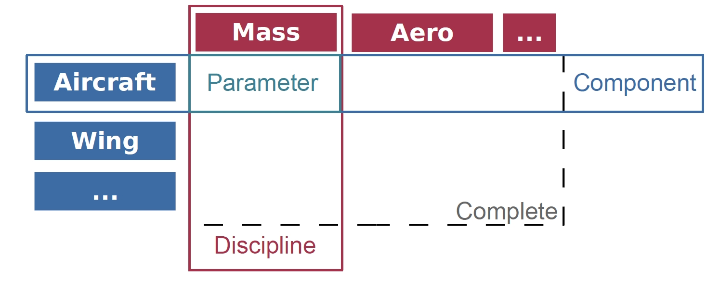
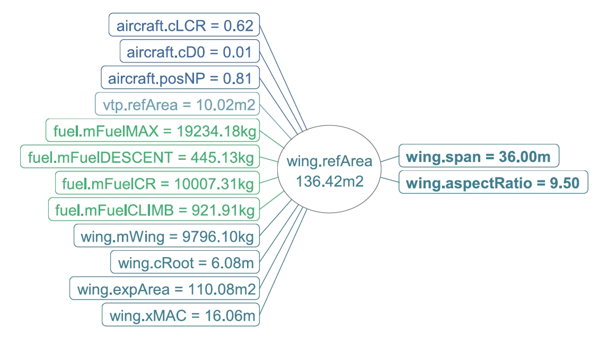
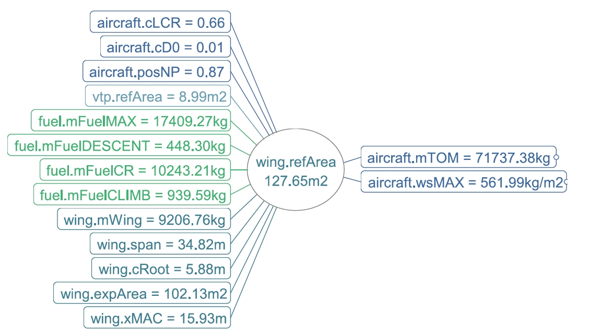
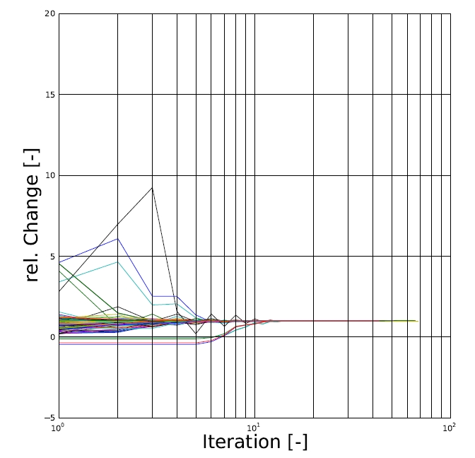
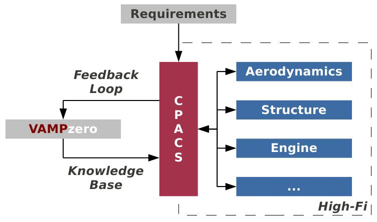

Note
This is an extract from a paper presented at the IEEE Aerospace Conference 2011 [1] You can find the full version from IEEE Explore
For the quick reader
If you want to start working right now, go to the Getting Started section!
The request for a new conceptual design tool originates from DLR’s multidisciplinary aircraft design processes. Although several higher order models are already coupled with CPACS, as described by Liersch, et al [2] , some conceptual methods are required to close the gaps, e.g. deriving center of gravity locations from the input of component-based analysis modules, in the holistic design process. Consequentially, the new code needs to feature requirements such as batch capabilities and should be modular, reusable, readable and extensible.
In this section, the module structure of the developed conceptual design code is elaborated on. The structure is elementary for interactions of VAMPzero with other analysis modules inside the design environment. The methods for up- and downscaling are described subsequently. These are an irreplaceable part when it comes to closing a multi-fidelity design loop.
An object-oriented structure was chosen for the development of the new conceptual design code (VAMPzero) to increase the modularity and to be able to detach the feature aspects (file handling, convergence control, process control) from the design aspects (parameter definitions, calculation methods). In this way a code is introduced that can easily be extended and adapted.
The two main classes implemented in VAMPzero are Component and Parameter . These two classes hold generic routines that are inherited or overwritten by specific classes, e.g. a wing component class or a span parameter class. Components share associations with other components and are structured in a hierarchical way. Each component holds several parameters that are grouped by Discipline . A wing that is modeled as a component has a parameter span within the discipline geometry. The structure is displayed in the above figure . Each of the named elements holds a calc method. The calc methods in components and disciplines are used for process control, whereas the parameter calc methods hold the design knowledge mostly in empiric or analytic form. In this way it is possible to use parts of the analysis capabilities in a transverse way and replace components, parameters and disciplines. This is an essential part of the aspired multi-fidelity strategy and will be described in the following sections in more detail.
In a baseline version of VAMPzero, which can be run stand alone, the parameter calculation methods based on handbook methods. At some points (e.g., mass estimations) new correlations are introduced to include databases that fit our design purposes better.
Additionally, several other methods are available for both components and parameters. These are coded in the respective classes. Depending on the implementation of the subclass an arbitrary number of methods can be overwritten. The calculation process for example can be broken down into: importing a value from CPACS, calculating until converged, exporting to CPACS. As a matter of fact, the calc method needs to be overwritten for each new class. For the import and export methods, either XPath variables can be specified or new methods are implemented. The parameter class holds several generic methods and some of them are overwritten by the class for the thrust-specific fuel consumption, namely the import method and the calc method. A third calcCPACS method is specified as well which will be elaborated at a later point in this paper.
Changing the calculation method of a parameter often changes the dependencies in the model. As the calculation method accesses the values of other parameters, it is possible to track the adjacencies in the model during runtime. The representation of the adjacencies is made using open-source mind-mapping software and supports the transparency of the analysis module. Links between parameters in the model can be displayed without looking into the code. As different calc methods are available within a parameter and are chosen depending on the status of other parameters and available input from CPACS, this representation reflects the analysis process even better than the underlying code. Examples of this representation can be seen in the following figures. The adjacencies are displayed for the parameter in the center with just one plane of entries. To the left hand side parameters accessing the value of the central parameter (caller) are aligned. For the calc method of the parameter, the parameters on the right hand side are accessed (callee). The views can be navigated in a browser-like way and help in understanding the recursive structure of the design process.
Knowing the dependencies in the model is the basis for more operations to monitor the calculation. When an analysis run is set up, parameters are assigned a status that can either be initialized, calculation or fix. At the construction of the objects, each status is set to initialized. If a parameter is not fixed its value will be calculated by one of its calc methods. Fixing parameters in the model may lead to inconsistencies. These occur whenever all inputs of a parameter with status fix are fixed as well. The takeoff mass, for example, is derived from the payload mass, the operational empty mass and the mission fuel mass. If the latter three values are fixed, the takeoff mass can be calculated. If the takeoff mass is fix as well, a warning will be given.
Depending on the status of the model, different calc methods are chosen. If the parameters span and aspect ratio of a component wing are fixed (by user input), the reference area of the wing is calculated by geometric definitions. An example for this calculation can be found in Figure 5. On the right hand side the fixed (bold font) parameters span and aspect ratio are displayed. The left hand side shows all parameters derived from the reference area.
In a different calculation run, the span may not be fixed as it is supposed to be calculated by VAMPzero. In this case a different calculation method for the reference area is chosen depending on the maximum wing loading and the maximum takeoff mass. The results for the calculation run are displayed in the figure below. In this setup the status of right hand values is also calc. The list of parameters on the left hand side is extended by the span as it is now determined from the reference area.
When developing conceptual design codes or multidisciplinary design processes usually just a few key values, e.g. maximum takeoff mass, operation empty weight and static thrust, are checked for convergence. In VAMPzero convergence is checked for all parameters separately, as can be seen in the figure below. The relative change of the value of a parameter is displayed dependent on the number of iterations. All graphs11 are displayed on a logarithmic scale to improve the clarity of the diagram. The displayed convergence histories are shown for an analysis run with a minimum number of input values. As a matter of fact, this calculation requires several iterations but shows the numerical stability of the code.
Depending on the required amount of input data and computing time, higher order physical models may be used in preliminary and detail design. Several studies have been carried out to link higher order methods with fast geometry generation tools. These efforts have enabled the automatic use of physical methods, as most of the work-intensive reoccurring preprocessing is automated. Examples can be seen in knowledge-based engineering and rule-based systems. It can be expected that computational intricate and expensive tools are used in a later phase of the design, described by La Rocca as the converging phase.
The goal of this study is to show the development steps necessary to close a multi-fidelity design loop, as shown in the figure above. Part of this is the software structure within a conceptual design module, as well as the surrounding distributed design environment. Communication within the environment is established via a central model. These parts of the distributed design environment will be explained further in the following sections. They are split into the knowledge base enabling uses to export data to CPACS and the feedback loop that integrates this information into the design process again.
| [1] | Daniel Boehnke, Bjoern Nagel, Volker Gollnick, An Approach to Multi-Fidelity in Distributed Design Environments, IEEE Aerospace Conference, Big Sky, USA, 2011 |
| [2] | Carsten Liersch, Martin Hepperle, An Unified Approach for Multidisciplinary Aircraft Design, CEAS Conference, Manchester, UK, 2009 |
{kind=link}
{kind=link}
{kind=link}
{kind=link}
{kind=link}